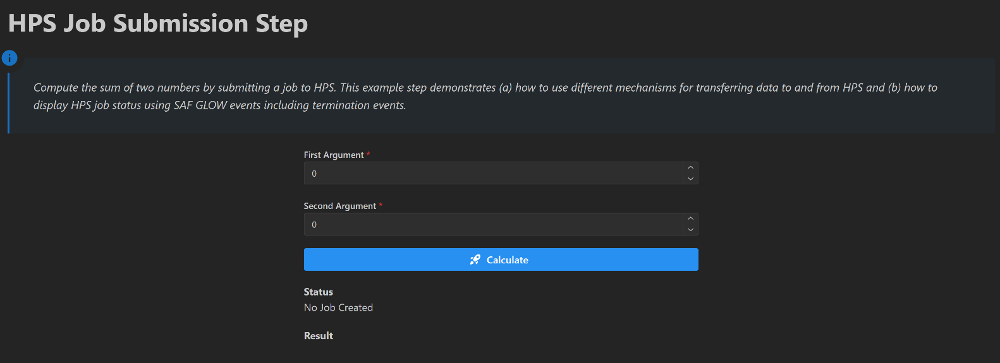

HPS job submission and events#
Feature highlight#
The user starts an HPS job using values from the UI as inputs and configures the job to generate outputs. The example redundantly transfers these inputs and outputs to HPS in different ways to demonstrate the range of capabilities of the HPS job submission API.
In this example, you learn how to:
Write the function that runs on HPS as plain Python, independently of the solution.
Declare the job with an execution specification that describes its outputs.
Submit the job and transfer files and directories to HPS with
Path,EntityHandle, and the input specifications.Monitor the job from a long-running transaction method and retrieve its outputs.
Publish the job status on an event stream and emit a termination event when the transaction method completes.
Wire callbacks and event listeners that start the job and refresh the status and result displays.
When you complete this example, you can expect the following output in the solution UI:
{kind=link}

Initial layout of the HPS job submission page#
Prerequisites#
The HPS job submission API is provided in the GLOW Engine package, which is available by default in any SAF-based solution.
Coding#
To submit and monitor an HPS job from a solution, work through the following sequence of sections.
Logic#
Write the business logic.
Key concept — Business logic
The function executed on HPS is plain Python: it has no dependency on SAF and can be developed
and tested on its own. Its signature is the contract that the HpsExecutionSpecification and
the execute call must honor.
Write the function that is executed in HPS
The calculate_sum function is executed in HPS and is consistent with the
HpsExecutionSpecification and execute calls in the run_job transaction method.
See
Declare the job for the
HpsExecutionSpecificationcall; andStart the job for the
executecall.
import json
from pathlib import Path
def calculate_sum(
first_arg: float, # arg passed directly
second_arg: float, # arg passed directly
persisted_input_file: Path, # args passed as file which a copy of a file referenced by an EntityHandle
persisted_input_directory: Path, # args passed as file inside a directory which is a copy of a referenced directory
transient_input_file: Path, # args passed as file which a copy of a file referenced by a Path
transient_input_redirected_file: Path, # args passed as file inside a renamed directory
transient_input_directory: Path, # args passed as file inside a directory which is a copy of a directory
):
"""Calculate the sum of two arguments, demonstrating various input and output mechanisms."""
result = first_arg + second_arg
input_content = {
"first_arg": first_arg,
"second_arg": second_arg,
}
input_content_str = json.dumps(input_content)
# check that the various inputs have the expected values
assert input_content_str == persisted_input_file.read_text()
assert input_content_str == (persisted_input_directory / "inputs.json").read_text()
assert input_content_str == transient_input_file.read_text()
assert input_content_str == transient_input_redirected_file.read_text()
assert input_content_str == (transient_input_directory / "inputs.json").read_text()
# check that the redirected file has the correct name
assert "redirected_input.json" == transient_input_redirected_file.name
# generate output files
output_content_str = json.dumps(result)
# write output to location specified in the HpsOutputFileSpecification evaluation_path
Path("output_for_redirection.json").write_text(output_content_str)
# write output directory named according to the outputs dictionary key
# because HpsOutputFileSpecification not present
output_directory_path = Path("output_directory")
output_directory_path.mkdir()
(output_directory_path / "nested_output.json").write_text(output_content_str)
# output dictionary contains data that is not contained in output files or directories
# using the same key as that used in the output dictionary
return {"result": result}
This method:
adds its first two float arguments together
returns the result of the sum as a float output parameter
checks that various input files supplied from SAF GLOW Engine contain the same data as the float arguments (some of these files are nested within directories)
writes the result of the sum into various output files (some of these files are nested within directories)
Backend#
Create the solution definition.
Key concept — Execution specification
An HpsExecutionSpecification describes the job: the function to run on HPS and the
output_parameters it produces. Calling execute on it transfers the inputs, starts the job,
and returns a handle used to monitor it.
Declare the job
The following code shows the first part of the long running transaction method that declares the HPS Job (subsequent parts start the job, monitor the job status and retrieve the outputs).
...
from ansys.solutions.examples.solution.scripts.calculate_sum import calculate_sum
...
@long_running
@transaction(
self=StepSpec(
upload=["status", "result", "output_file", "output_directory"], download=["input_file", "input_directory"]
),
enable_termination_event=True,
)
def run_job(self) -> None:
"""Submit job to HPS."""
self._push_status("Submitting job to HPS")
# fetch JSON content
content_str = self.storage_scope.get_text(self.input_file)
input_data = json.loads(content_str)
first_arg = input_data["first_arg"]
second_arg = input_data["second_arg"]
# create transient files
file_path = self.storage_scope.get_storage_root() / "inputs.json"
file_path.write_text(content_str)
file_path_for_redirection = self.storage_scope.get_storage_root() / "inputs_for_redirection.json"
file_path_for_redirection.write_text(content_str)
# create transient directory
directory_path = self.storage_scope.get_storage_root() / "input_dir"
directory_path.mkdir()
inner_file_path = directory_path / "inputs.json"
inner_file_path.write_text(content_str)
execution_spec = HpsExecutionSpecification(
function=calculate_sum,
# here we return the result in several different ways from the job
# this is just an example!!
output_parameters={
"result": float,
"output_directory": HpsOutputDirectorySpecification(),
# Important: EntityHandle is NOT the default return type
# on HpsOutputFileSpecification
"output_file": HpsOutputFileSpecification(
return_type=EntityHandle, evaluation_path="output_for_redirection.json"
),
},
)
The transaction method constructs an instance of HpsExecutionSpecification which specifies:
the module containing the code which is to be run on HPS via the
functionparameter, in this casecalculate_sumsee Write the function that is executed in HPS; andthe outputs of the job (via the
output_parametersparameter).
In this case we rely on the SAF default action to transfer the solution source directory src\ansys\solutions\examples\solution\scripts
to HPS for execution as the job.
The output_parameters argument is a dictionary where the keys are the output names and the values are the types of the parameters or objects
that specify filesystem outputs.
In this case the output_parameters declares:
the
resultoutput as a float (we assume that thecalculate_sumfunction will return a dictionary with a keyresultwith an associated float value);the
output_directoryoutput as a directory (we assume that thecalculate_sumfunction will write an output directory calledoutput_directory);the
output_fileoutput as a file (because the declaration supplies anevaluation_path, we assume that thecalculate_sumfunction will write an output file calledoutput_for_redirection.json).
The solution uses 2 event streams, status and run_job to enable the UI to respond to changes in the state of the HPS job and the run_job transaction method.
The transaction decorator has the enable_termination_event parameter set to True to enable termination events to be raised for the transaction method.
This ensures that a termination event is raised on the stream named after the transaction method name run_job.
The UI code updates the displayed job status and result value in response to the termination event.
The _push_status method raises events on the status stream and uploads values to the step status field.
See
Monitor the job for the declaration of
_push_status;Update the status display for the callback that handles the status events;
React to the termination event for the callback that handles the termination event; and
Build the layout for the layout that declares the status and termination event streams.
Key concept — Input transfer
Files and directories referenced by Path, EntityHandle, HpsInputFileSpecification, or
HpsInputDirectorySpecification are copied to HPS and passed to the remote function as named
arguments of the execute call.
Start the job
The following code shows the second part of the long running transaction method, run_job, that starts the HPS Job
(subsequent parts monitor the job status and retrieve the outputs).
# here we pass the same data in several different ways to the job script
# this is just an example!!
hps_project = execution_spec.execute(
first_arg=first_arg, # arg passed directly
second_arg=second_arg, # arg passed directly
persisted_input_file=(self.input_file), # args passed as file which a copy of a file referenced by an EntityHandle
persisted_input_directory=(
self.input_directory
), # args passed as file inside a directory which is a copy of a directory referenced by an EntityHandle
transient_input_file=file_path, # args passed as file which a copy of a file referenced by a Path
transient_input_redirected_file=HpsInputFileSpecification(
file_path_for_redirection, "redirected_input.json"
), # args passed as file inside a renamed directory which is a copy of a referenced directory
transient_input_directory=(
directory_path
), # args passed as file inside a directory which is a copy of a directory referenced by an EntityHandle
)
self._push_status("HPS Job submitted")
The transaction method calls the execute method on the instance of HpsExecutionSpecification which:
specifies the inputs to the job (via the parameters passed to the
executemethod which must be named);starts the job execution in HPS; and
returns a handle to the HPS project that enables the job to be monitored (see Monitor the job).
The files and directories referenced by pathlib.Path, EntityHandle, HpsInputFileSpecification and HpsInputDirectorySpecification
are transferred to HPS. The paths to these copies are passed to the calculate_sum function as arguments and the files are located in the
current directory during the execution of the function. The names of these files and directories are derived from the argument values passed
to the execute method. HpsInputFileSpecification and HpsInputDirectorySpecification provide arguments that can override these names.
In the example case the job has:
two float input parameters,
first_argandsecond_arg;a file input parameter,
persisted_input_file;a file input parameter,
transient_input_filewhich is renamed toredirected_input.jsonwhen copied to HPS;two directory input parameters,
transient_input_directoryandpersisted_input_directory;
Key concept — Long-running transaction method
A transaction method decorated with @long_running executes asynchronously, so the UI stays
responsive while the job runs. Setting enable_termination_event=True on the @transaction
decorator raises a termination event on the stream named after the method when it ends.
Monitor the job and retrieve its outputs
The following code shows the third part of the long running transaction method, run_job, that monitors the HPS Job and retrieves outputs from HPS
logger.info(f"started monitoring HPS job")
NUMBER_OF_ITERATIONS = 240
iterations = 0
while iterations != NUMBER_OF_ITERATIONS and not hps_project.finished:
self._push_status(self._hps_status_string(hps_project))
time.sleep(1)
iterations += 1
logger.info(f"HPS Job finished with status: {hps_project.status.evaluation_status.value}")
if hps_project.finished:
status = self._hps_status_string(hps_project)
success = hps_project.status.evaluation_status == HpsJobEvaluationStatus.EVALUATED
else:
status = "HPS Job took longer than expected"
success = False
if success:
self.output_file = hps_project.output_file # type: ignore
self.output_directory = hps_project.output_directory # type: ignore
self.result = hps_project.result # type: ignore
else:
self.output_file = NO_ENTITY # type: ignore
self.output_directory = NO_ENTITY # type: ignore
self.result = None # type: ignore
self._push_status(status)
logger.info(f"completed monitoring HPS job")
def _hps_status_string(self, hps_project: HpsSimpleProject):
return "Job in HPS: " + hps_project.status.evaluation_status.value
def _push_status(self, status: str):
self.status = status
self.transaction.raise_event(status, stream_name="status")
self.transaction.upload(["status"])
The transaction method uses the HPS project handle variable hps_project to access the job status and results.
(hps_project is assigned to the return value of the execute method.)
The method iterates until the job has stopped running or has exceeded an expected execution duration.
The method can detect the job has stopped by accessing the hps_project.finished attribute.
Note
It is possible to define the maximum execution time of the job execution via the HpsExecutionSpecification parameter max_execution_time.
That does not constrain the time taken by HPS to create the job record, transfer input files and start the job on an execution node.
Relying on the max_execution_time assumes that the HPS infrastructure functions correctly.
As a result solutions should not wait indefinitely for HPS jobs to finish but should, as shown here, stop monitoring the job after a certain period of time.
At various points the transaction method updates the project and the UI to reflect the current job status via the _push_status method.
This method streams status updates to the UI via the status event stream and uploads the status field so that it is persisted.
The transaction method detects whether the job finished successfully via the hps_project.status.evaluation_status attribute.
If the transaction is successful the method updates the output file, output directory, and result step fields corresponding values from the hps_project.
These values are accessed as attributes of the hps_project with the same names as the keys in the output_parameters dictionary passed to the
HpsExecutionSpecification.
See
Update the status display for the callback that handles the status events;
React to the termination event for the callback that handles the termination event; and
Build the layout for the layout that declares the status and termination event streams.
Frontend#
Expose the solution definition in the UI.
Key concept — Event listener
An event listener is a frontend component created with DashClient.create_event_listener.
It subscribes the page to a backend event stream and fires a callback every time a message is
raised on that stream, which removes the need to poll the backend for progress.
Build the layout
The following code shows the layout code that creates the initial UI.
import json
import logging
from ansys.saf.glow.client import DashClient, callback
from ansys.saf.glow.solution import MethodStatus
import dash
from dash_extensions.enrich import Input, Output, State, html
import dash_mantine_components as dmc
from ansys.solutions.examples.solution.advanced.hps_job_submission_step import HpsJobSubmissionStep
from ansys.solutions.examples.solution.definition import ExamplesSolution
logger = logging.getLogger(__name__)
def layout(step: HpsJobSubmissionStep):
"""Layout of the HPS job submission step page."""
running = step.get_method_state("run_job").status == MethodStatus.Running
return html.Div(
[
html.H1(
"HPS Job Submission Step", className="display-3", style={"font-size": "48px", "fontWeight": "bold"}
),
html.P(
"Compute the sum of two numbers by submitting a job to HPS. This example step demonstrates (a) how"
+ " to use different mechanisms for transferring data to and from HPS and (b) how to display HPS job"
+ " status using SAF GLOW events including termination events.",
className="lead",
style={"font-size": "20px"},
),
html.Hr(className="my-2"),
dmc.Space(h=20),
dmc.NumberInput(
label="First Argument",
id="hps-first-arg",
value=step.first_arg,
placeholder="Enter first argument",
required=True,
style={"width": "40%", "display": "inline-block", "marginLeft": "30%"},
disabled=running,
),
dmc.Space(h=20),
dmc.NumberInput(
label="Second Argument",
id="hps-second-arg",
value=step.second_arg,
placeholder="Enter second argument",
required=True,
style={"width": "40%", "display": "inline-block", "marginLeft": "30%"},
disabled=running,
),
dmc.Space(h=20),
dmc.Button(
"Calculate",
id="hps-calculate",
leftIcon=html.Img(src=dash.get_asset_url("icons/streamline--startup-solid.svg")),
radius="md",
style={"width": "40%", "display": "inline-block", "marginLeft": "30%"},
disabled=running,
),
dmc.Space(h=20),
dmc.Text(
"Status", style={"fontWeight": 700, "width": "40%", "display": "inline-block", "marginLeft": "30%"}
),
dmc.Text(
step.status,
id="hps-progress",
style={"width": "40%", "display": "inline-block", "marginLeft": "30%"},
),
dmc.Space(h=20),
dmc.Text(
"Result", style={"fontWeight": 700, "width": "40%", "display": "inline-block", "marginLeft": "30%"}
),
dmc.Text(
str(step.result) if step.result is not None else "",
id="hps-result",
style={"width": "40%", "display": "inline-block", "marginLeft": "30%"},
),
DashClient.create_event_listener(step, stream_name="status", id="hps-status_ws"),
DashClient.create_event_listener(step, stream_name="run-job", id="hps-termination_ws"),
]
)
This code enables or disables the UI depending on whether the transaction method step.run_job() is currently running.
This code declares two event listeners for 2 streams: status which receives string to display in the status display component (hps-progress) and
run-job which receives a message when the job terminates (that changes the state of the UI).
The callback handling the status events is documented in Update the status display.
The callback handling the run-job events is documented in React to the termination event.
Key concept — Callback
A callback is a Dash-decorated function that fires in response to a UI event. In a SAF
solution, callbacks reach the backend through project.steps.<step_name>, read or write
fields, and invoke transaction methods. No manual HTTP calls are needed.
Start the job from the frontend
The following code shows the callback that starts the HPS Job.
@callback(
Output("hps-progress", "children", allow_duplicate=True),
Output("hps-calculate", "disabled", allow_duplicate=True),
Output("hps-first-arg", "disabled", allow_duplicate=True),
Output("hps-second-arg", "disabled", allow_duplicate=True),
Output("hps-result", "children", allow_duplicate=True),
Input("hps-calculate", "n_clicks"),
State("url", "pathname"),
prevent_initial_call=True,
)
def calculate(n_clicks: int, project: ExamplesSolution):
"""Trigger the job submission."""
step = project.steps.hps_job_submission_step
step.status = "Starting Calculation"
step.write_persisted_inputs()
step.run_job()
return step.status, True, True, True, ""
This method:
triggered when the calculate button is clicked
extracts the job inputs from the display field via the
write_persisted_inputsmethodstarts the long running method step.run_job(), which is responsible for executing the HPS job
updates the status of the step to indicate that the calculation has started
disables the input and button components and clears the result component
ensures that the status is persisted so that the user can navigate properly between pages and projects while the job is running
Update the status display
The following code shows the callback that updates the status display.
@callback(
Output("hps-progress", "children", allow_duplicate=True),
Output("hps-calculate", "disabled", allow_duplicate=True),
Output("hps-first-arg", "disabled", allow_duplicate=True),
Output("hps-second-arg", "disabled", allow_duplicate=True),
Output("hps-result", "children", allow_duplicate=True),
Input("hps-status_ws", "message"),
prevent_initial_call=True,
)
def update_status(message):
"""Triggered when a status event is received from HPS.
This method updates the status displayed on the page.
"""
message_str = json.loads(message["data"])
return message_str, True, True, True, ""
This method is triggered when a status event is raised by the backend. This method updates the status display component with the payload of the received event, maintains the disabled state of the input components and blanks the result display component.
Key concept — Termination event
When a long-running transaction method ends, a termination event is raised on the stream named after the method. The frontend uses it to leave the running state: re-enable the inputs and display the final status and result.
React to the termination event
The following code shows the callback that updates the UI in responds to the termination of the run_job transaction method.
@callback(
Output("hps-progress", "children", allow_duplicate=True),
Output("hps-calculate", "disabled", allow_duplicate=True),
Output("hps-first-arg", "disabled", allow_duplicate=True),
Output("hps-second-arg", "disabled", allow_duplicate=True),
Output("hps-result", "children", allow_duplicate=True),
Input("hps-termination_ws", "message"),
State("url", "pathname"),
prevent_initial_call=True,
)
def termination(message, project: ExamplesSolution):
"""Triggered when the run_job transaction method completes.
This method re-enables the input fields of the form and displays the result of the job.
"""
step = project.steps.hps_job_submission_step
if step.get_method_state("run_job").status == MethodStatus.Failed:
step.status = "Calculation Failed"
return step.status, False, False, False, str(step.result) if step.result is not None else ""
This method is triggered when the transaction method run_job terminates.
This method updates the UI to reflect the final status of the job and re-enables the input fields.
Now that your implementation is complete, continue to the Testing section.
Testing#
Finally, test your implementation to confirm it works as expected.
Run the solution and compare your results with the results shown in the Feature highlight section.